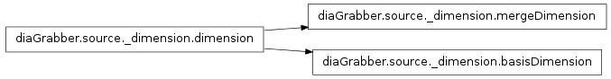

diaGrabber.source._dimension¶

Baseclass for all dimensions¶
- class diaGrabber.source._dimension.dimension(source)[source]¶
Bases: object
The basis-class of merge- and basisDimension. Provides everything that is identically for both of them.
- calc()¶
call-method for instance of diaGrabber.source.methods._container._calcContainer
- exclude()¶
call-method for instance of diaGrabber.source.methods._container._excludeContainer
- setCalcResultToValue(calc_index)¶
set every value of the dimension to the result of one entry in dimension.getCalc()
- setCounter(**kwargs)[source]¶
Use this method to generate a dimension as a linear counter.
Optional kwargs (“keyword arguments”) are:
Keyword Type Default Description start float 0 the fist value of the counter delta float 1 the difference which is add to the last couter-value update bool True True: continue counting False: create a fixed counter-list from start to start + (delta*resolution)
- transform()¶
call-method for instance of diaGrabber.source.methods._container._transformContainer
basisDimension¶
- class diaGrabber.source._dimension.basisDimension(source, **kwargs)¶
Bases: diaGrabber.source._dimension.dimension
basisDimensions determine the shape and size of the target. Therefore its values are strictly bounded to a range of discrete points.
see setArgs() fo all possible arguments.
- setArgs(**kwargs)¶
Required kwargs (“keyword arguments”) are:
Keyword Type Example Description name str “one” the name of the basisDimension unit str “m/s” the unit of the basisDimension index int
str
0
“folder”
“counter”
“fixedCounter”
the position in the source-file ‘0’ will be the first one all sourcefiles are in folders each name of a folder represents a value of this basisDimension The folder is located between the source-folder (if given) and source-file. It is possible to use multible basisDimensions with index=’folder’. In this case the order of those dimensions represents the order in th filesystem. see setCounter() (with update=True) see setCounter() (with update=False) resolution int 50 the number of different positions stored in the range of all values of the basisDimension Optional kwargs (“keyword arguments”) are:
Keyword Type Default Description prefix float/str 1 the prefix of the unit. can be a float or a string like ‘m’ for milli see _evalPrefix() for all possibilities include list/str “all” in opposite to mergeDimensions every basisDimension is strictly bounded. That means every basis has a range in which its values can vary. Typing ‘all’ indicates diaGrabber to look for the min. and max. values in the source(s) and set the range as [min,max] typing [x,y] would bound the basis-values between x,y all values bigger and lower than those would be excluded typing chronic bounds the basis not to the size but to the ammound of values. this means that in this case every last n values would be stored, where n is the value of ‘resolution’
- setPlotOnlyRecentPosition(TrueOrFalse)¶
Set this if you only want to plot the last readout basis-value.
- setPlotRange(start=None, stop=None, step=None)¶
Define the visible range of the plotted values.
Parameters: - start (int) – defines the fist position in the range of all basis-values. {0} would be the first position.
- start – defines the last position in the range of all basis-values. {RESOLUTION} would be the last position.
- step – defines the number of basis-values to jump over for plotting. {1} would plot every value of this dimension. {10} would plot every 10st value.
type {None} if you don’t want to define one entry.
mergeDimension¶
- class diaGrabber.source._dimension.mergeDimension(source, **kwargs)¶
Bases: diaGrabber.source._dimension.dimension
Values of mergeDimensions where directly written into the matrices of the target. That’s why it’s values were not bounded. If merge-values are store in postitions of the mergeMatrix which are not empty, its values have to be merged (that gives the name of the dimension). Have a look at diaGrabber.source.methods.merge to see all methods of merging values together.
see setArgs() fo all possible arguments.
- alias()¶
With this method you can bound the success of taking a new merge-value on the success of other mergeDimensions. Example:
one = mergeDimension(... merge=merge.max() ) two = mergeDimension( ... ) two.alias.append(one)
In this case only merge-values of the dimension ‘two’ were taken if those values of ‘one’ were also taken.
See all possible methods of alias() in: diaGrabber.source.methods._container._aliasContainer
- setArgs(**kwargs)¶
Required kwargs (“keyword arguments”) are:
Keyword Type Example Description name str “one” the name of the basisDimension unit str “m/s” the unit of the basisDimension index int
str
0
“counter”
“fixedCounter”
the position in the source-file ‘0’ will be the first one see setCounter() (with update=True) see setCounter() (with update=False) Optional kwargs (“keyword arguments”) are:
Keyword Type Default Description prefix float/str 1 the prefix of the unit. can be a float or a string like ‘m’ for milli see _evalPrefix() for all possibilities merge instance merge.last() see diaGrabber.source.methods.merge for all possible options